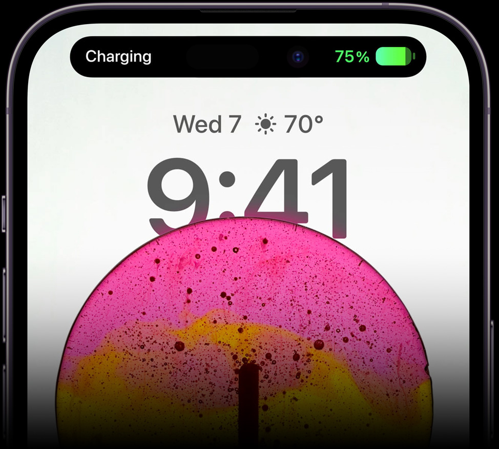
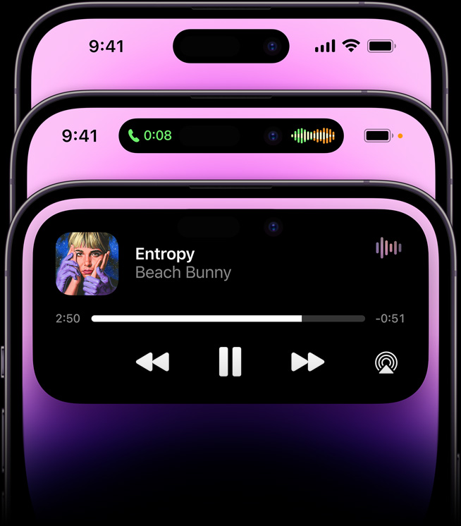
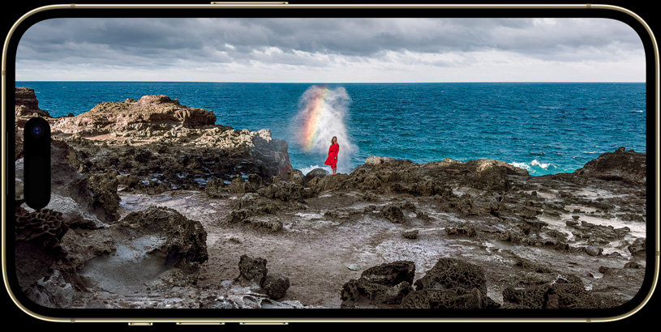

iPhone 14 Pro

Pro.
Beyond.
iPhone 14 Pro and iPhone 14 Pro Max
check back later for availability

Designed for durability.
With Ceramic Shield, tougher than any smartphone glass. Water resistance.1 Surgical-grade stainless steel. 6.1″ and 6.7″ display sizes.2 All in four Pro colors
Introducing Dynamic Island, a truly Apple innovation that’s hardware and software and something in between. It bubbles up music, sports scores, FaceTime, and so much more — all without taking you away from what you’re doing.

Welcome to a shape-shifting, multitasking, head-turning, game-changing iPhone experience.

Dynamic Island blends fun and function like never before, consolidating your notifications, alerts, and activities into one interactive place. It’s integrated throughout iOS 16 — and can work with all kinds of apps — to seamlessly surface what you need, right when you need it.
It expands fluidly to get your attention — Hey, you have a call coming in! — then tucks away again. You can touch and hold to control your music, and even see your location while texting with friends.3 Easy. Intuitive. Delightful.
Meet the
new face
of iPhone.
Meet the new face of iPhone
Introducing Dynamic Island, a truly Apple innovation that’s hardware and software and something in between. It bubbles up music, FaceTime, and so much more — all without taking you away from what you’re doing.
For those bright, sunshiny days, the Super Retina XDR display now reaches a peak of 2000 nits outdoors — that’s twice as bright as before and the highest peak brightness of any smartphone. So text jumps right off the screen.
Photos and HDR videos get a big boost, too — up to 1600 nits peak brightness, bringing iPhone to the same level as the Pro Display XDR. Movies, shows, and even the films you’ve shot on iPhone look more true to life than ever.
